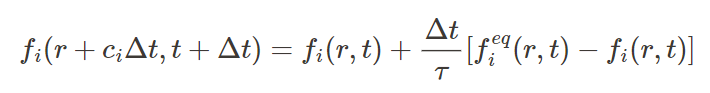

Problem Domain
The importance of finding an optimal solution depends on the application:
- Engineering: Critical for improving designs in aerospace, automotive, and renewable
energy, where efficiency, safety, and performance are paramount.
- Manufacturing: Essential for reducing defects and optimizing processes like
casting, molding, and chemical mixing.
- Games and VFX: Realism and computational efficiency are more important than strict
optimality, enabling engaging interactions and lifelike animations.
Optimal solutions are vital for technical accuracy in engineering and manufacturing but less so in
creative domains like entertainment.
Related Projects
There are many fluid simulations based on the Navier-Stokes equations, each employing
different methods of approximation. For our non-shader implementation, we referenced a
Python-based Lattice Boltzmann Method (LBM) from the repository pmocz/latticeboltzmann-python.
While we couldn't find LBM-specific shader implementations, we drew inspiration for our visual
setup and general structure from shader-based fluid simulations that use other approximations,
specifically Fluids-2d by mharrys and WebGL-Fluid-Simulation by
PavelDoGreat. Both of these
projects utilize multiple shaders in sequence to simulate fluid motion effectively which is
what we attempted to implement in our shader algorithm too.
Inputs and Outputs
Inputs
- Initial state
- Size of grid
- Random noise of velocity
- Initial significant velocity of some particles (white circle)
- Collidable geometry mask. Initial circle object.
- Live User input
- Adding collidable geometry
Outputs
- Velocity at each lattice site
- Simulation runs for certain number of timesteps
Mathematical Background
The lattice Boltzmann method (LBM) is a numerical method used to simulate fluid dynamics. It is based on
the kinetic theory of fluids and describes the evolution of distribution functions of particles in a
lattice grid. The core idea is to solve the discrete Boltzmann equation on a lattice, which models the
probability distribution of particles' velocities.
The lattice Boltzmann equation can be written as:

Where:
- f_i(r, t) is the distribution function for the i-th direction at position r and
time t.
- c_i is the lattice velocity vector in the i-th direction.
- delta_t is the defined speed of streaming.
- τ is the relaxation time tau, related to the viscosity.
- f_i^{eq}(r, t) is the equilibrium distribution function, which is typically derived
from the Maxwell-Boltzmann distribution and ensures conservation of mass and momentum.
This equation is solved iteratively on a discrete grid, where the fluid's macroscopic quantities, such as
density and velocity, are obtained by summing the distribution functions over all directions.
Non-Shader Algorithm Description
Overview
While simulation is running:
1. Initialization
Initialize lattice grid with dimensions NxM
For each cell in the grid:
- Initialize fluid density and velocity distribution (9 velocity directions for 2D)
- Apply boundary conditions (walls, inlets, outlets)
Set fluid relaxation time (tau)
Set speed of streaming (delta_t)
Define lattice velocity vectors (9 directions for D2Q9 model)
Time complexity of this step: O(NxMx9)=O(NxM)
2. Collision Step
For each cell in the grid:
- Compute macroscopic density (rho) and velocity (u) from the distribution functions
- For each velocity direction:
Time complexity of this step: O(NxMx9)=O(NxM)
3. Streaming
For each cell in the grid:
- For each velocity direction:
- Move distribution function to neighboring cell in the direction of the velocity vector
Time complexity of this step: O(NxMx9)=O(NxM)
4. Handle Boundaries
For each boundary cell (could be entire grid):
- Apply no-slip boundary conditions:
- Reverse the velocity at the wall (bounce-back)
- Apply periodic boundaries (if necessary):
- Wrap fluid from one side to the other
Time complexity of this step: O(NxM), worst case is that entire grid is covered in objects.
5. Update Macroscopic Cell Variables
For each cell in the grid:
- Compute macroscopic velocity and density from the new distribution functions
Time complexity of this step: O(NxM)
6. Render
For each cell in the grid:
- Compute the color or size of a particle based on the density or velocity magnitude
- Render the scene using Three.js
Time complexity of this step: O(NxM)
Shader Algorithm Description (Theoretical)
Overview
- Initialization
- Perform Simulation
- Implementation Issues
1. Initialization
Set Up Three.js World
- Set up renderer, orthographic camera, and plane geometry.
- Set up scenes, materials, and mesh for both the display scene and the buffer scene.
Create Textures
- Create two sets of three textures of size:
resolution x resolution.
- Use two sets to ensure one set is written to while the other is read. Assume the one to be read is currentTextures and the other nextTextuers
(In practicality, for ThreeJS, this should be accomplished using two WebGLRenderTargets with 3 textures in each)
- Each texture can hold up to 4 values (
r, g, b, a).
Texture Data Allocation
- First Texture: RGB channels hold distribution functions for particles moving North-West, North, and North-East.
- Second Texture: RGB channels hold distribution functions for particles moving West, East, or standing still.
- Third Texture: RGB channels hold distribution functions for particles moving South-West, South, and South-East.
Initialize one set of textures with starting values for the simulation.
Load Shaders
Boundary Shader
-
For pixels at the edge of the screen, move the distribution functions to the opposite boundary. For example, if a pixel faces a border to the North, take the distribution functions from the North-West, North, and North-East directions and add them to the South-West, South, and South-East directions.
- Set the Northern values to 0 so particles no longer move in that direction.
Collision Shader
- Calculate the values of all 9 distribution functions and set them.
Streaming Shader
- Move the distribution functions in their respective directions. For example, set the value at the North direction of one pixel to the North direction value at the pixel directly above it.
Visualization Shader
- Take the values of all three textures and determine the color to display. The output is one texture that can be displayed on top of the plane.
2. Simulate
- Run each shader in sequence.
- For each shader:
- Set the material for the buffer mesh to the shader currently being run.
- Set material textures to currentTextures (the ones to be read).
- Render the buffer scene to run the shader and obtain new texture values.
- Store the new values in nextTextures.
(With WebGLRenderTargets, the last two steps combine into one)
- Swap currentTextures and nextTextures so the new textures to be read by the next shader are in the currentTextures variable.
- Finally, set the display mesh’s texture to the meaningful texture(with colors) from the visualization shader.
(Implementation Issues)
Background Information about ThreeJS and Rendertargets:
Rendertargets essentially allow you to draw pixels in an off-screen buffer and are rendered in the background.
These are used to run shaders in the background before visualization, speeding up processing time as well as allowing us to have multiple textures to read from and write to.
Issue:
In previous years, Shaders in ThreeJS were able to output to multiple textures using THREE.WebGLMultipleRenderTargets to set up multiple targets for the shader. However, in February/March of 2024, this function was deprecated.
The new method of implementing multiple render targets involves setting the count in the THREE.WebGLRenderTargets function. However, we were unable to successfully utilize this method with our shaders.
Time Complexity Analysis - Non-shader algorithm
- Initialization:
O(N × M)
- Collision Step:
O(N × M)
- Streaming:
O(N × M)
- Handle Boundaries:
O(N + M)
- Update Macroscopic Variables:
O(N × M)
The overall complexity for a single timestep is dominated by O(N × M), as boundary
handling is typically a minor contribution.
Time Complexity Analysis - Shader algorithm
Initialization
This step has the greatest cost in terms of time complexity. You need to set up 6 textures of size N, resulting in a complexity of:
6 × O(N2)
Additionally, setting up the other Three.js world objects and scenes introduces its own time requirements.
Simulation
Unlike the non-shader algorithm, the shader algorithm can run calculations for each pixel in parallel. This is achieved by utilizing the user's GPU, meaning performance depends on:
- The computational power of the user’s GPU.
- The chosen resolution for the textures.
Assuming the GPU can process the entire texture in parallel (which is realistic for most modern GPUs and textures up to 1024 × 1024), each shader runs in:
O(1)
Consequently, running all the shaders at each time step also has a complexity of O(1).
Overall Time Complexity
Therefore, the overall time complexity is approximately:
- Setup:
O(N2)
- Simulation:
T × O(1) = O(T), where T is the number of timesteps.
Runtime Analysis (no shaders)
| Input Size (lattice sites) |
Avg. Runtime of 1 Step (ms) |
Memory (kB) |
| 2,500 |
10.68 |
90.33 |
| 10,000 |
11.78 |
361.33 |
| 22,500 |
21.69 |
812.99 |
| 40,000 |
39.40 |
1445.31 |
| 160,000 |
6.5 (simulation update) ~470 (rendering) |
5781.25 |